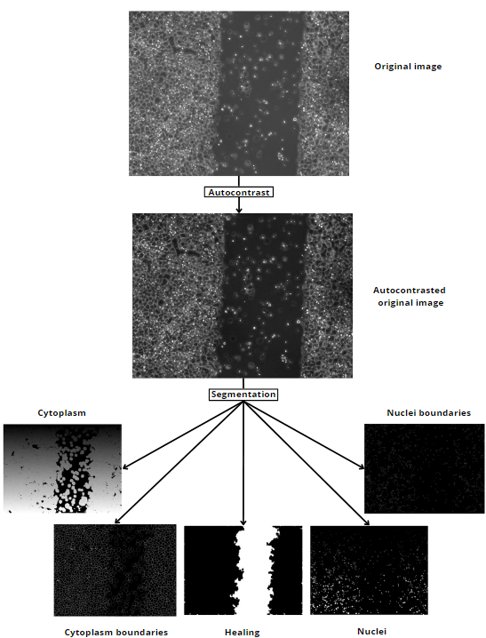
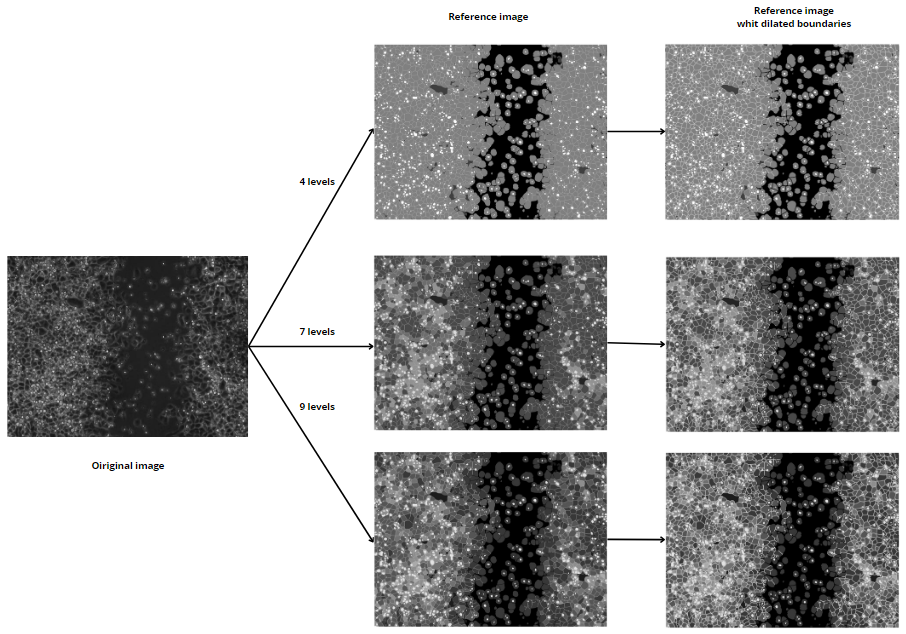
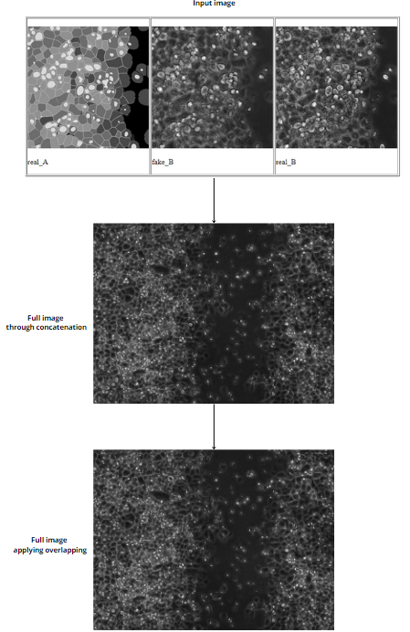

Cancer is one of the leading causes of mortality worldwide and its treatment remains one of the most significant challenges in medicine. Cell migration is a critical aspect of cancer research and potential treatments. This process, by which cells move, spreads the disease and can be studied based on the dynamics and interactions between cells and their environment. In cancer cells, this process is known as metastasis and is one of the primary reasons for its high lethality.
Various procedures analyze and enhance the inhibition of migration, while others focus on stopping tumor proliferation or tissue degeneration. These processes are influenced by the behavior of different cell types and the biochemistry of cancer. The ability to model and predict cell migration provides valuable information for the research and development of new therapies. These studies are based on real images obtained through microscopy, reflecting cell or tissue behavior.
By extracting data from the images about the state and behavior of cells, it is possible to classify different cell types and predict their behavior or life cycle. Through processes such as image segmentation and statistical modeling of underlying behavior, physical-chemical processes associated with these pathologies can be described and analyzed.
Recent advances have shown that applying Artificial Intelligence in biomedicine offers new perspectives for solving complex tasks. Particularly, AI-based generative systems have proven effective in image synthesis and pattern detection, although they have not been applied to cell studies. Published works include precise simulations that can guide experimental research and offer new perspectives on results, facilitating their interpretation.
This work presents and addresses some of the challenges posed by using generative AI for studying cell migration. These include the quality of cell segmentation tools, the different characteristics of images for training models, the generative capabilities of models, and the quality and suitability of synthetic images generated. These synthetic images can be adjusted to real patterns present in biological samples or synthetic patterns, opening up new forms of study and validation in images under controlled patterns.
The study of cell behavior poses several difficulties, such as the existence of different cell types, deviations in image capture conditions, segmentation errors, or long execution and analysis times. This work focuses on the challenges posed by segmentation and the challenges for image generation to be used in the development and evaluation of new segmentation tools or for studying cell behavior and interactions.
In the context of cancer, identifying and tracking cancer cells and their migrations can be a costly and laborious process, hence the interest and need to generate simulations through a few real images. Image segmentation is a task that divides an image into segments or regions of interest (ROIs) that are considered significant. In this case, it is common to segment different cells, their structures, or even their content. This is useful for measuring morphological characteristics, evaluating the content of structural elements, tracking movements, and assessing treatment effects.
Segmentation tools, described and used in the literature, are based on computer vision techniques. Not all of them have been evaluated for use in microscopy images or under different acquisition conditions that allow generalizing their use. A preliminary study has shown their limited accuracy, which may raise doubts about the conclusions obtained in scientific studies.
Once the images are segmented, the detected regions are associated with different categories. This segmented image provides much information and intrinsically describes a pattern unique to each image. With all this information, it is possible to define a reference pattern for each image. A similar approach can be taken for manually segmented images, using the segmented image to define a characteristic pattern.
In this work, the pattern will be used to form the input images to the synthesis model. These patterns can be modified in various ways, altering conditions such as image size, number of labels, number of layers, or cell boundary thickness. As we will see, control over these pattern conditions will be key to achieving favorable results in realistic microscopy image synthesis. It also allows adaptation to different experimental conditions, improving the quality and increasing the applicability of synthetic images generated in different investigations.
Through the patterns, datasets will be generated to train the deep neural network model. There are different options for image generation, and for this work, the pix2pix GAN has been selected. The work carried out has led to favorable results, generating quality images from sketches.
This process allows for a complete system that can be evaluated using objective image evaluation metrics, comparing synthetic images with real ones. Another way to assess models is through the loss functions of the training performed by pix2pix. Additionally, it is important that the objective study commented on achieves good results, but it must also agree with real images, so subjective scientific opinion should also be considered for such studies.
This work focuses on evaluating and potentially improving the accuracy and efficiency of tools available for studying cell migration. This study has great potential as it can adapt to different cell types and experiments, and could open new lines of research and development in the fight against cancer and personalized medicine.
Additionally, the proposed system has the capability to generate large amounts of synthetic data, allowing for scalability in studies. Furthermore, it provides access to systematic hypothesis exploration and facilitates data interpretation, aiding in the identification of patterns and relationships through its adaptability.
Moreover, the urgency for such tools is notable, as without this entire process, it is not possible to validate the functioning of many algorithms involved in the analysis of such samples due to the lack of a reference or ground truth, which makes it difficult to make specific considerations objectively.
Description of the image segmentation process and results.
Description of the image reference creation process and the visual changes of the conditions.
Description of the image generation process and results.
